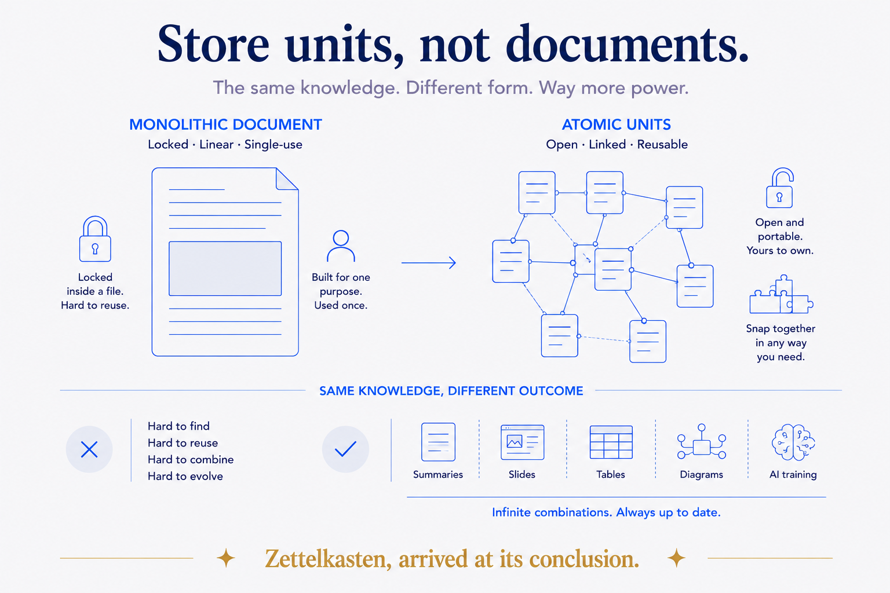
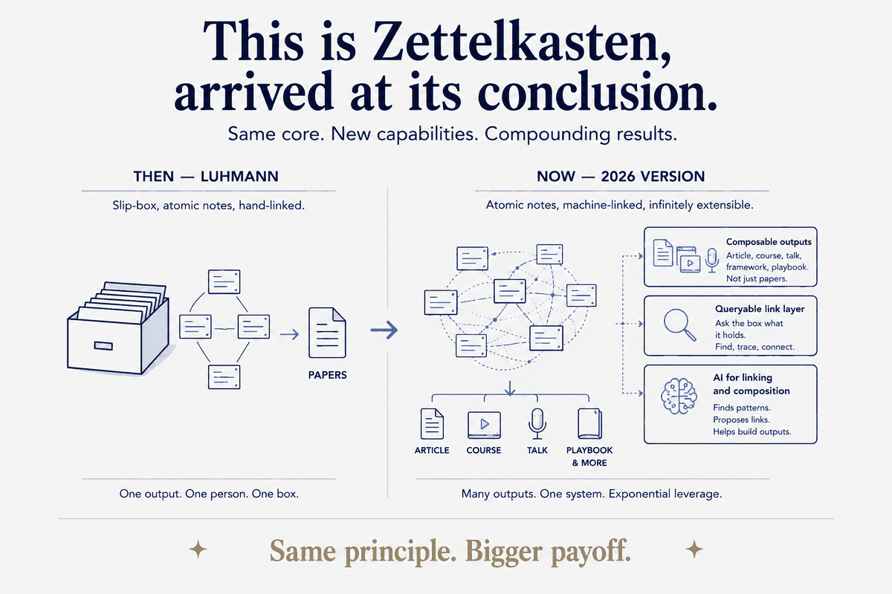

The waste nobody notices
Here is a pattern almost every expert repeats without seeing it. You write an article about something you know well. Months later you build a workshop — and you start from a blank page, even though the workshop is the same knowledge. Later still you prepare a conference talk on the topic, and again: blank page. Then a client wants a short course, and once more you rebuild the thing you have now explained, in full, three times.
The knowledge didn't change between those four formats. Only the packaging did. But because each version was captured as a finished document — an article, a slide deck, a course outline — none of it composes. You own four monoliths that happen to overlap, and every new format costs you a full rebuild.
That waste is not inevitable. It's a consequence of how the knowledge was stored.
Store units, not documents
The fix is to stop treating the article as the unit of knowledge, and start treating the idea as the unit. Capture each idea once, small and whole — one concept, one worked example, one diagram, one code snippet — tagged and linked to the ideas it relates to. Not "an article about historization," but a dozen atomic blocks: what a satellite is, why bi-temporal matters, the one query that proves the point, the diagram that shows the shape.
Once knowledge lives as units, a format is just a selection and an order:
- An article is a sequence of blocks with connective prose.
- A workshop is a curated, reordered set of the same blocks, plus exercises.
- A course adds progression and a way to check understanding.
- A talk is the essence of three or four blocks, stripped to the spine.
You don't rebuild the knowledge for each format. You re-sequence the blocks. The article corpus is the curriculum's raw material. The concept library is the skills framework. The building blocks are the lesson content. Nothing is authored twice.

This is Zettelkasten, arrived at its conclusion
If this sounds familiar, it should. It is the slip-box — Niklas Luhmann's Zettelkasten — which is exactly the right lineage to claim, because structured knowledge in 2026 is Zettelkasten, upgraded. Luhmann's insight was that knowledge compounds through connection, not accumulation: atomic notes, one thought each, densely cross-referenced, until the box becomes a thinking partner that "writes with you." He produced 70 books and 400 papers from one slip-box, because the notes recomposed.
What's new in 2026 isn't the principle — it's three upgrades that change what the box can do:
The notes become composable outputs. Luhmann's slip-box fed his writing. Yours feeds writing and training and consultancy. The same block is a paragraph in an article, a slide in a workshop, and a talking point in a talk — one unit, many monetized formats.
The link layer becomes queryable. Luhmann followed threads by hand. A database view over the concept graph lets you ask the box what it holds — which ideas cluster into a theme, where the gaps are, what's never been connected. The slip-box you can run a query against.
AI does the linking and the composition. The manual labour that made Zettelkasten powerful but slow — surfacing the relevant notes, drafting the connective tissue, assembling a format from the units — is exactly what AI does now. The box doesn't just store and connect. It writes back.
The result is that the payoff Luhmann got from decades of disciplined note-taking is available on a different timescale, and it points at more than the next paper. It points at a whole knowledge-to-consultancy engine built from the same units.

The honest constraint
This only works if the units are genuinely atomic and genuinely tagged. A folder full of long documents does not recompose — you cannot re-sequence a monolith. The discipline that makes content-to-training possible is the boring part done up front: capture small, capture one idea at a time, tag it, link it. Skip that, and you are back to rebuilding from a blank page, because there is nothing small enough to reuse.
That is the trade. A little more structure at capture time, in exchange for never authoring the same knowledge twice. For anyone whose output is their expertise — writers, trainers, consultants — that trade pays for itself the first time one article quietly becomes a course.
Why I can show you this
I can describe this method precisely because I run it. The corpus of articles, the library of named concepts, the reusable blocks, the database view over all of it — they exist, and they are how the training material, the talks and the courses actually get made. This very article was composed from blocks, not written from a blank page.
That's the point of structuring your knowledge in the first place: not to have a tidy archive, but to make everything you know reusable on purpose. The archive that just stores is a cost. The one that recomposes is an engine.
If you're sitting on years of writing, slides and half-built courses that overlap but won't compose — that's the knowledge you already have, waiting for a structure that lets it work. That's the conversation to have.